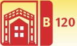
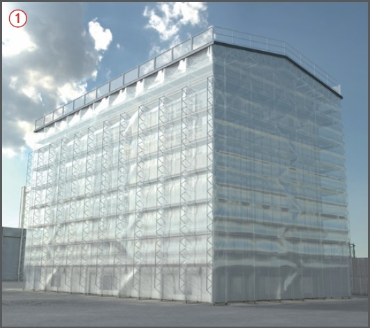
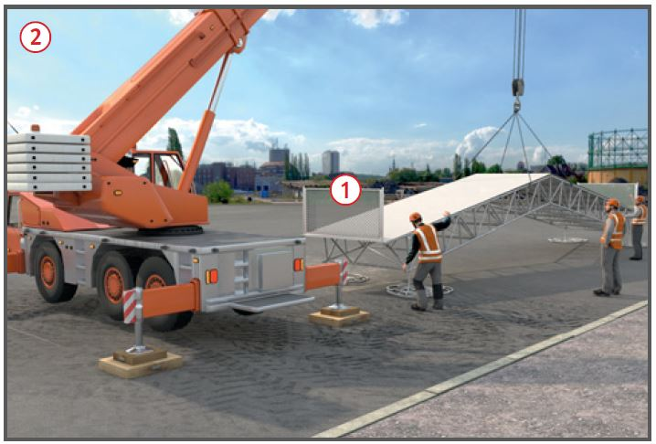
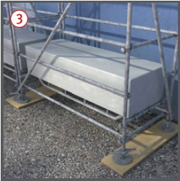

Wetterschutzdächer
|

|

Gefährdungen
- Durch fehlende Sicherungsmaßnahmen beim Auf-, Um- und Abbau sowie bei Instandhaltungsmaßnahmen (z. B. Schneeräumung) kann es zu Absturzunfällen kommen.
- Ein nicht fachgerechter Aufbau von einem Wetterschutzdach und der Stützkonstruktion kann zum Versagen der Standsicherheit und Umsturz führen.
Allgemeines
- Ein Wetterschutzdach wird immer auf eine Stützkonstruktion (z. B. bestehende Bauwerkteile, Stahlkonstruktion, Stützgerüstgerüst) aufgelagert. Als Stützkonstruktion werden meistens Stützgerüste (z. B. Systemgerüste) verwendet.
- Für das Wetterschutzdach und das Stützgerüst ist ein Nachweis der Brauchbarkeit, bestehend aus Standsicherheitsnachweis und Aufbau- und Verwendungsanleitung (AuV), zu erbringen.
- Der Standsicherheitsnachweis für das Wetterschutzdach kann durch einen statischen Nachweis im Einzelfall, eine Typenberechnung des Herstellers oder die Zulassung erteilt durch das DIBt, erfolgen.
- Das Stützgerüst benötigt immer einen statischen Nachweis im Einzelfall und für diesen Einzelfall eine spezielle Aufbau- und Verwendungsanleitung (AuV). Dabei kann die AuV des Herstellers für das verwendete Gerüstsystem benutzt werden, welche durch die speziellen Anforde rungen aus dem Standsicherheitsnachweis ergänzt werden müssen.
- Erfolgt die statische Berechnung mit reduzierten Schneelasten sind Maßnahmen (z. B. Konzept zur Schneeräumung, Beheizung) festzulegen, um die Standsicherheit zu gewährleisten. Die Hinweise und Empfehlungen der Hersteller sind dabei zu berücksichtigen.
- Bei z. B. heizbaren Dachplanen oder wenn bei ungedämmten Dachflächen die Temperatur an der Unterseite der Dachfläche von mindestens 12 °C gewährleistet wird, kann in der Regel auf eine Schneeräumung verzichtet werden. Die Ausbildung von Wassersäcken ist auszuschließen.
- In den Bauordnungen der Bundesländer gibt es teilweise unterschiedliche Anforderungen für Wetterschutzdächer (z. B. Baugenehmigung, Prüfstatik). Eine vorherige Anfrage bei der jeweilig zuständigen Bauaufsichtsbehörde ist zu empfehlen.

Schutzmaßnahmen
- Der Auf-, Um- und Abbau des Wetterschutzdaches und des Stützgerüstes erfolgt nach einer speziell für das Vorhaben angefertigten Montageanweisung des Gerüsterstellers, auf der Grundlage der AuV des Herstellers (jeweils für das Wetterschutzdach und das Stützgerüst) mit den Ergänzungen aus dem Standsicherheitsnachweis. Diese Dokumente müssen bei den Montagearbeiten vor Ort vorhanden sein.
- Vom Unternehmer ist eine Betriebsanweisung zu erstellen, anhand derer die Beschäftigten zu unterweisen sind.
- Wetterschutzdach (einschließlich Seitenschutz) möglichst bodennah montieren
 und mit Hebezeug versetzen, um die Absturzgefahr bei Arbeiten in großen Höhen zu minimieren.
und mit Hebezeug versetzen, um die Absturzgefahr bei Arbeiten in großen Höhen zu minimieren.
- Für das Versetzen von vormontierten Konstruktionen sind die Anschlagpunkte (aus AuV) und die Anschlagmittel in der Montageanweisung festzulegen.
- Für die Auf, Um- und Abbauarbeiten sind weitestgehend mit technischen Maßnahmen (z. B. Seitenschutz
 ) gesicherte Verkehrswege und Arbeitsplätze zu verwenden. Der Einsatz von Persönlicher Schutzausrüstung gegen Absturz (PSAgA) ist auf ein Minimum zu beschränken.
) gesicherte Verkehrswege und Arbeitsplätze zu verwenden. Der Einsatz von Persönlicher Schutzausrüstung gegen Absturz (PSAgA) ist auf ein Minimum zu beschränken.
- Vor dem Einsatz von PSAgA hat der Unternehmer ein Rettungskonzept zu erstellen.
- Bei der Verwendung von PSAgA sind nur die in der AuV des Herstellers angegebenen Anschlagpunkte zu verwenden. Anderenfalls ist die Brauchbarkeit der Anschlagpunkte durch den Gerüstersteller nachzuweisen.
- Die Dachfläche muss für Arbeiten auf der Dachfläche über einen geeigneten sicheren Zugang (z. B. Treppe) betreten werden können und an allen absturzgefährdeten Seiten (wie z. B. Traufe , Ortgang , Dachöffnungen, Dachbelag mit Lichtkassetten) mit Seitenschutz gesichert sein.
- Eine eventuell notwendige Ballastierung ist nur mit festem Material (z. B. Beton- oder Stahlgewichte) auszuführen, keine flüssigen oder körnigen Materialien in Behältern verwenden
 .
.
- Nach Fertigstellung sind sowohl das Wetterschutzdach und das Stützgerüst zu kennzeichnen. Wenn im Nachweis der Standsicherheit die Schneelast reduziert wurde, ist für das Wetterschutzdach ein Schneeräumungskonzept erforderlich, welches durch den Gerüstersteller dem Auftraggeber zu übergeben ist. Dieser hat den Nutzer darüber zu informieren.

Zusätzliche Hinweise für den Gebrauch
- Am Wetterschutzdach und am Stützgerüst dürfen durch den Nutzer keine konstruktiven Änderungen (z. B. Entfernen von Seitenschutz, Fallstecker, Verankerungen, Diagonalen, Ballastierung, Abspannungen) vorgenommen werden.
- Gerüste nur nach dem Plan für den Gebrauch (Kennzeichnung, Warnhinweise und ggf. Schneeräumungskonzept) verwenden.
- Öffnungen im Wetterschutzdach und im bekleideten Stützgerüst (z. B. Kassetten, Planen) sind nach Arbeitsende und bei längeren Arbeitsunterbrechungen zum Schutz vor Witterungseinflüssen (z. B. starker Wind) zu schließen.
- Schnee auf dem Wetterschutzdach ist entsprechend dem Schneeräumungskonzept im Plan für den Gebrauch, welcher durch den Gerüstersteller übergeben wurde, zu beräumen.
Prüfungen
- Gerüstersteller: Prüfung durch eine "zur Prüfung befähigte Person" nach Fertigstellung und vor Übergabe an den Nutzer, um den ordnungsgemäßen Zustand festzustellen (Nachweis-Prüfprotokoll). Je nach Komplexität des Wetterschutzdaches und des Stützgerüstes ist auch eine Prüfung in Form einer "Autorenkontrolle" durch den Statiker sinnvoll.
- Gerüstnutzer:
- Inaugenscheinnahme durch eine "qualifizierte Person" des jeweiligen Nutzers vor dem Gebrauch, um die sichere Funktion und die Mängelfreiheit festzustellen (Nachweis-Checkliste).
- Kontrolle ob der Plan für den Gebrauch vorhanden und für seinen Anwendungszweck aussagekräftig ist.
- Nach längerer Zeit der Nichtbenutzung oder nach Naturereignissen (z. B. Stürme, Starkregen) hat der Nutzer vor dem Gebrauch über den Auftraggeber eine außerordentliche Überprüfung durch eine "zur Prüfung befähigte Person" (Gerüstersteller) zu veranlassen.
07/2021